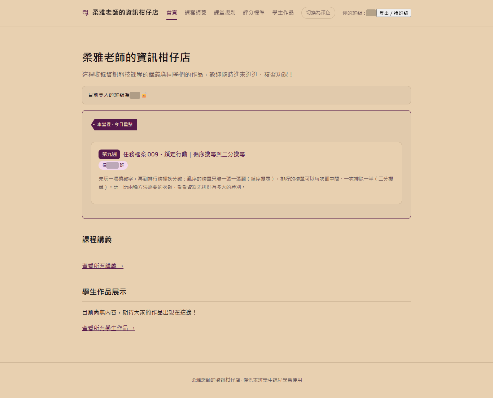
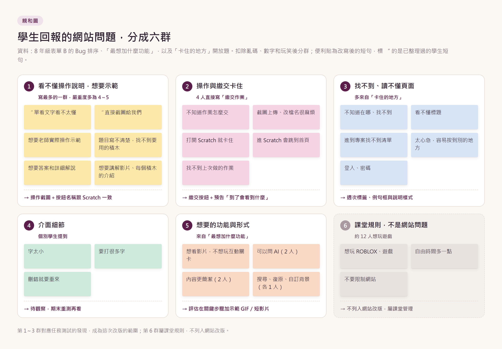
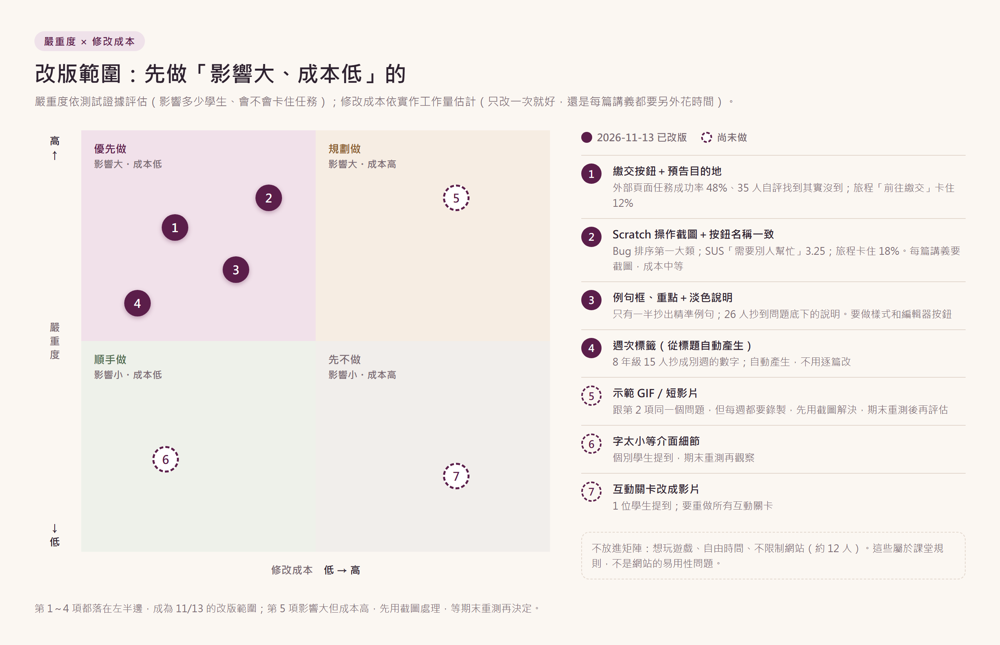
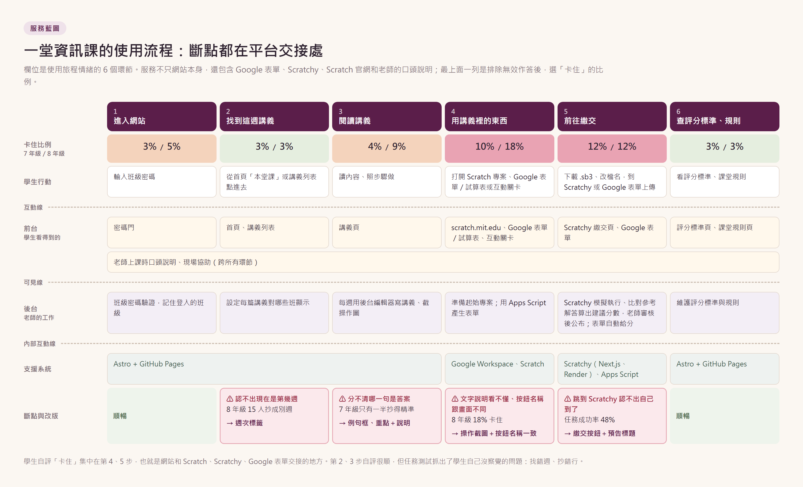
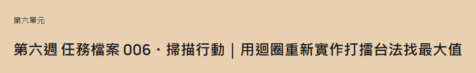
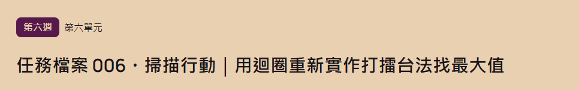
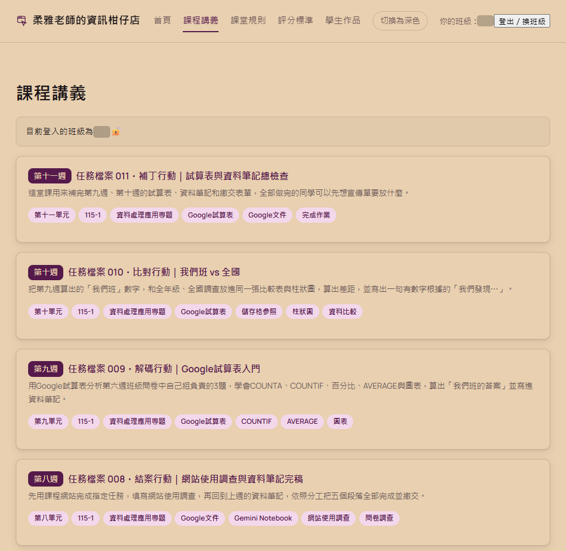
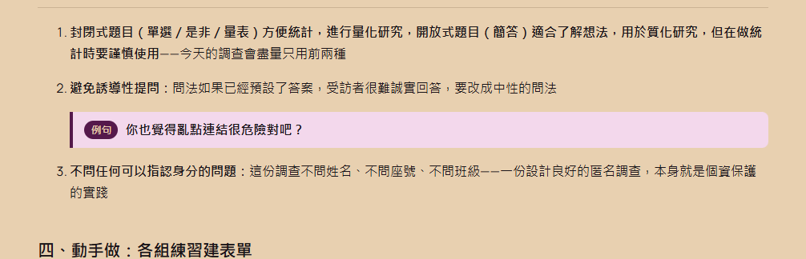
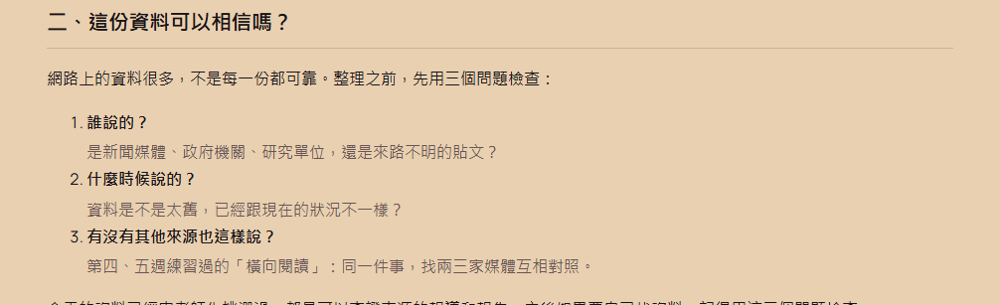

柔雅老師的資訊柑仔店 Lola's IT Class Website
我自己設計、開發並每天在課堂上使用的國中資訊課教學網站。這次把易用性測試包進上課內容，從 7、8 年級 18 個班的實際操作中找出學生卡住的地方，再自己把發現做成改版並上線。

Project Snapshot
| Role | Team | Project Duration | Tools | System Scope |
|---|---|---|---|---|
| 任課老師／網站設計與開發／研究設計 | 個人專案（AI 協作） | 2026/10 - 迄今 | Astro, GitHub Pages, Google 表單, Claude Code | 7、8 年級 18 個班 |
Context
Project Background
「柔雅老師的資訊柑仔店」是我用 Astro 打造、部署在 GitHub Pages 的課程網站（網站連結）。網站放每週講義、互動闖關和作業繳交連結，學生用班級密碼登入，每堂資訊課都會用到。
這個專案裡我同時有三種身分：任課老師（每週看著學生使用）、網站的設計者和開發者（改版由我自己實作上線）、研究的設計者（決定要測什麼、怎麼判讀）。也因為身分重疊，研究設計要特別小心「老師問、學生不敢說」的偏誤。
Target Users
- 8 年級（8 個班）：在學 Scratch 程式（陣列、排序、搜尋），作業要交到我另外做的自動批改工具 Scratchy。
- 7 年級（10 個班）：在做資料處理專題，會用到 Google 表單和試算表。
兩個年級每週都會在網站、Google 表單、Scratchy、Scratch 官網之間來回跳轉。服務不只網站本身，平台之間的交接處最容易斷掉。
Project Goals
- 找出學生真正卡住的地方：回答三個研究問題：找得到嗎？哪裡斷掉（特別是跳到外部平台時）？整體好不好用？
- 研究不另外占一堂課：所有學生都要做，但任務本身就是複習上課內容，不能讓學生覺得跟學習無關。
- 把發現落實成上線的改版，並保留改版前的基準版本，期末重測驗證。
Research & Insights
Research Methods
- 包在課程裡做：每個任務都要學生到網站上找資料、抄下「驗證答案」。學生在抄答案的同時其實是在複習上課內容，我同時收到導覽的易用性資料。8 年級放在第七週選擇排序那堂的暖身，7 年級放在第八週。
- 任務測試＋驗證答案：每人做 4 個找資料的任務。驗證答案必須是頁面上可以直接抄到的字，不需要理解就能答，這樣答錯時才分得出是「找不到頁面」還是「看不懂內容」。每題再問「找到了嗎？」和「難不難找（1～5）」，把「自評」和「實際表現」分開記錄。
- SUS 量表（兒童改寫版）：10 題改寫成國中生看得懂的版本，可以跟業界平均 68 分對照。
- 使用旅程情緒：把一堂課的使用流程拆成 6 個環節（進站 → 找講義 → 看講義 → 用講義裡的表單／Scratch 專案／互動關卡 → 繳交 → 查成績或規則），每個環節選很順、普通或卡住。
- 8 年級加做 Bug 排序：學生寫下網站問題並打嚴重度，再用剛學的選擇排序法排出「先修哪個」，同時也是選擇排序的遷移練習。
- 樣本：7 年級 205 份；8 年級表單 A 146 份、表單 B 130 份，涵蓋全部 18 個班。同一人交兩次的只留最後一次。
判讀規則：任務成功與否看驗證答案是否證明學生到了對的地方，由我依答案內容逐份判讀，不看學生自評，也不用表單的自動計分（逐字比對會把抄太多的人判錯）。四題全錯且內容是亂碼或玩笑的，列為無效作答，成功率同時列「全部」和「排除無效後」兩個數字。
Key Findings / Main Problems
- 大部分東西學生都找得到：同一題白名單任務，排除亂填之後，兩個年級的成功率都在 85～88%。
- 陌生的外部頁面認不出來：8 年級要從講義跳到 Scratchy 的任務，成功率只有 48%。有 35 人自評「順利找到」，其實答錯，很多人抄的是講義上的檔名，根本沒有點進去。7 年級跳到每週都在用的試算表，成功率卻有 83%。所以問題出在「陌生頁面」，而不是「跳出網站」本身。
- 分不清哪一句才是答案：7 年級找到正確段落的人裡，只有一半抄出精準的例句。另有 26 人抄到問題底下的說明，沒有抄到問題本身。
- 認不出現在是第幾週：8 年級有 15 人把別週講義的數字抄成答案。
- 看不懂 Scratch 的文字說明：這是學生在 Bug 排序裡寫最多的問題，例如「單看文字看不太懂」「直接截圖給我們」。8 年級 SUS「需要別人幫忙」這題平均 3.25（1～5 分），旅程中有 18% 的人卡在「使用 Scratch 專案」。
- 意外發現：講義寫的按鈕名稱跟 Scratch 畫面不一樣。講義寫「進去看看」「匯出到你的電腦」，但 Scratch 繁體中文介面實際顯示的是「切換到程式頁面」「下載到你的電腦」。這是我用自動化工具截操作圖時才發現的。
- SUS 平均：7 年級 58.4、8 年級 44.0，都低於業界平均 68。不過約三成學生十題都選同一個分數（已排除），而且 SUS 跟任務表現幾乎沒有關聯（相關係數 0.12～0.18），所以我只把 SUS 當輔助指標。
使用旅程（排除無效作答後，選「卡住」的比例）
| 環節 | 7 年級 | 8 年級 |
|---|---|---|
| 進入課程網站 | 3% | 5% |
| 找到這週的講義 | 3% | 3% |
| 閱讀講義內容 | 4% | 9% |
| 使用講義裡的表單／Scratch 專案／互動關卡 | 10% | 18% |
| 前往繳交作業 | 12% | 12% |
| 查成績或看課堂規則 | 3% | 3% |
兩個年級的模式一樣：進站、找講義、看規則都順，卡在「用講義裡的東西」和「交作業」。
Affinity Diagram
把 8 年級 Bug 排序、「最想加什麼功能」和「卡住的地方」的開放回答，扣掉亂碼和玩笑後分成六群。前三群剛好對應任務測試的發現，成為這次改版的範圍；寫最多的另一類「想玩遊戲、不要限制網站」屬於課堂規則，獨立成一群，不列入網站改版。

Key Insights
- 問題出在陌生頁面，不是跳出網站本身。 同樣是外部平台，每週都在用的試算表很順，學生不熟的 Scratchy 作業頁卻是最難的任務。學生需要的是「到了之後認得出來」的線索，不是少一次跳轉。
- 學生知道答案在哪一段，但分不清哪一句才是答案。 講義的例句、問題、說明都是同一種文字樣式，對國中生來說視覺上沒有層次，找到段落不等於讀對內容。
- 自評不可靠，SUS 只當輔助指標。 「自評順利但其實答錯」每題都有 15～45 人；SUS 也幾乎反映不出操作表現，比較像是對這門課的整體態度。真正可信的是有驗證答案的任務成功率。
Design Opportunities
- 讓學生跳到外部頁面前就知道「到了會看到什麼」
- 用視覺樣式區分例句、問題和說明
- 讓「現在是第幾週」一眼可見
- 用截圖取代 Scratch 的純文字操作說明，並讓按鈕名稱跟實際畫面一致
How This Influenced the Design
我依「證據強度 × 影響範圍」排出改版優先順序。Scratch 操作說明有三種資料互相印證（Bug 排序第一大類、SUS「需要別人幫忙」偏高、旅程 18% 卡住），排在第一；Scratchy 的任務成功率最低、自評落差最大，排第二；接著是分不清答案和週次辨識。
學生寫最多的另一類需求是「想玩遊戲、自由時間多一點、不要限制網站」。這是課堂規則的問題，不是網站的易用性問題，我判斷不列入這次改版。
我把這些候選改版整理成「嚴重度 × 修改成本」矩陣：嚴重度看測試證據，修改成本看實作工作量。這次的四項改版都落在「影響大、成本低」這一側；示範影片影響大但每週都要錄製，先用截圖解決，等期末重測再決定。

Design Process
Service Blueprint
把一堂課的使用流程畫成服務藍圖，前台除了網站，還有 Google 表單、Scratchy、Scratch 官網和我在課堂上的口頭說明。學生自評「卡住」集中在第 4、5 步，也就是網站和其他平台交接的地方；第 2、3 步學生自己覺得很順，但任務測試抓出了他們沒察覺的問題：找錯週、抄錯行。

研究方法的反思
這次最大的收穫，有一半來自研究方法本身出的問題。
- 學生會照抄表單上的任何範例。
- 舊版「卡住的地方」附了舉例，結果大量學生直接照抄舉例。
- Bug 排序有 59% 的人照抄排序範例。
- 第一班做完之後我就改了表單：照抄舉例的情況消失；照抄排序範例降到 26%；排序全對從 0/17 升到 31%（35/113）。
- 但連「沒有卡住就留空」這種中性說明都還有 6 人照抄。
- 設計原則：表單上不要出現任何能直接當答案的文字。
- 「剛好寫 4 個問題」改成「最多 4 個，沒寫的選 0」之後，有 213 格選了 0，硬湊答案的情況不見了。
- 自評不可靠：以 8 年級跳到 Scratchy 那題為例，124 人自評有找到，實際只有 70 人成功。驗證題是必要的。
- 觀察型任務比回想型問卷可靠：請學生「回想網站問題」，大多是空白或玩笑；實際操作的任務卻明確抓出了問題。
- 限制：兩個年級都記名（為了確認每個人都有交），可能讓學生比較不敢批評。無效作答佔 8 年級 18%、7 年級 8%。講義和表單都寫明「批評網站不影響成績」、網站調查完全不計分，但記名的影響仍無法排除。
AI 協作過程
這個專案從研究設計到改版上線都有用 Claude Code 協作，分工如下：
| AI 負責 | 我判斷、決定 |
|---|---|
| 研究設計的討論夥伴：一起整理研究問題、任務結構、SUS 兒童改寫版題目 | 研究要包在課程裡、所有學生都要做、驗證答案必須能直接抄到；兩份表單都記名 |
| 產生 Google 表單的 Apps Script；資料分析：彙整數據、計算 SUS 與相關係數、整理開放式回答 | 判讀規則：任務成功看答案內容而不是自評或自動計分、什麼算無效作答、7 年級「文件管理員」任務要逐一對照各組名單才算對 |
| — | 結論與優先順序：哪些是網站問題、哪些（例如想玩遊戲）是課堂規則問題、先修哪一個 |
| 實作四項改版、在後台編輯器加上新樣式按鈕 | 每項改版要解決哪個發現、預告文字要寫什麼，以及「你說→我改」只在課堂上口頭提，不寫進講義 |
| 用自動化工具截取改版前後的頁面與操作圖 | 隱私處理：分析檔一律去識別化，原始回應只留在 Google 試算表，不進 repo；作品集只用彙整數據與整理過的短句 |
第 6 項「按鈕名稱不一致」的發現，就是用自動化工具截 Scratch 操作圖時才注意到的：截圖上的按鈕名稱跟講義寫的不一樣，學生照著講義找，當然對不上畫面。這個問題學生沒有寫出來，問卷也問不到。
四項改版對照
| 研究發現 | 改版 |
|---|---|
| Scratchy 認不出來、繳交流程卡住 | 「前往繳交」從一般連結改成固定樣式的按鈕，並預告「打開後頁面最上方會寫『W6最大值』」 |
| Scratch 文字說明看不懂 | 操作步驟加上截圖（用紅框標出按鈕），按鈕名稱改成跟 Scratch 中文介面一致 |
| 認不出第幾週 | 講義標題開頭的「第○週」自動抽出來，做成醒目的週次標籤（列表、首頁、講義頁都有） |
| 分不清例句和說明 | 新增「例句框」和「重點＋淡色說明」兩種樣式，後台編輯器也加了「例句」「說明」按鈕，之後寫講義不用自己打 HTML |
Solution
Final Solution
2026-11-13 依測試結果改版上線。改版前的版本打了 git tag v1-baseline，並保留改版前後同一頁的截圖，期末重測時可以直接對照。
四項改版都是做成網站的元件或樣式，不是只改這一週的講義：週次標籤從標題自動產生，例句框和說明樣式在後台編輯器有按鈕，之後每一篇新講義都會自動套用。
Main Features
- 繳交按鈕＋預告文字：讓學生在跳到 Scratchy 之前就知道「到了會看到什麼」
- 操作截圖＋正確的按鈕名稱：Scratch 關鍵步驟附截圖，紅框標出要按的地方
- 週次標籤：在講義列表、首頁、講義頁都能一眼看出是第幾週
- 例句框、重點＋說明：把「要抄的那一句」和「補充說明」在視覺上分開
Key Screens
- 繳交按鈕
改版前：一般的文字連結，夾在段落之間，點下去之後學生不確定自己到了哪裡。

改版後：固定樣式的按鈕，下方預告「打開後頁面最上方會寫『W6最大值』，看到這個標題就代表到了對的地方」。

- Scratch 操作截圖

操作步驟加上實際畫面截圖，紅框標出要按的按鈕；按鈕名稱改成 Scratch 繁體中文介面上真正顯示的「切換到程式頁面」，並附註英文介面的名稱。
- 週次標籤
改版前：「第六週」混在標題文字裡，跟其他週的講義長得一樣。

改版後：「第○週」從標題自動抽出來，做成醒目的標籤。

講義列表也套用同一個標籤，學生掃一眼就能找到這週的講義。

- 例句框

要學生注意或抄寫的例句放進有「例句」標籤的色塊，跟前後的說明文字明確分開。
- 重點＋淡色說明

問題本身用粗體，底下的補充說明用淡色。這正好對應 7 年級有 26 人「抄到問題底下的說明，沒有抄到問題本身」的狀況。
Design Rationale
每一項改版都對應一個有數據支持的發現，而且都選擇「給線索」而不是「減少步驟」。例如 Scratchy 的問題，研究顯示跳出網站本身不是問題（7 年級跳到試算表很順），學生缺的是「到了之後認得出來」，所以改版不是減少跳轉，而是預告目的地的樣子。
Impact
Testing Approach
期末（2027 年 1 月）會用同樣的題型重測。題目內容換新（舊答案學生已經看過），但每一題的類型維持不變：一題在講義裡找特定一句、一題指定別週的講義、一題跳到外部頁面、一題規則頁（完全不改，當作兩次測試的對照題）。
主要指標是任務成功率，SUS 只當輔助。重測要看的指標和 10 月的基準：
| 問題 | 重測要看的指標 | 10 月基準 |
|---|---|---|
| 跳到 Scratchy 認不出來 | 8 年級外部頁面任務成功率、「自評順利但答錯」人數 | 48%；35 人 |
| 分不清哪一句是答案 | 7 年級「只抄出精準答案」的比例 | 約一半 |
| 認不出第幾週 | 8 年級「抄成別週資料」的人數 | 146 人中 15 人 |
| Scratch 文字說明看不懂 | 旅程「使用 Scratch 專案」卡住比例；SUS「需要別人幫忙」 | 18%；3.25 |
Iteration Focus
依這次的教訓，重測表單也會跟著改：
- 「卡住的地方」不放任何範例或說明，只寫「選填」
- SUS 前加一句提醒：「每題都要讀，有一半是反過來問的」
- 驗證題不用測驗模式自動給分，一律人工判讀
- 維持記名，讓前後兩次可以比較，報告裡一樣註明這個限制
Results
期末（2027/01）用同樣題型重測驗證中。
Future Improvements
- 完成重測後，把改版前後的任務成功率做成對照
- 有學生表示比起互動關卡更想看影片，評估在關鍵步驟加入示範 GIF 或短影片
Reflection
What Went Well
- 研究不占課：把任務包成複習內容，沒有另外排一堂課，18 個班都做完。
- 驗證答案的設計：因為答案能直接抄到，才分得出「找不到」和「看不懂」，也才抓得到「自評找到、其實沒到」的落差。
- 自己把研究落實成改版：分析完成當天就改版上線，而且做成可重複使用的元件，之後每一篇講義都受益。
What I Would Do Differently
- 改成匿名或半匿名作答：記名是為了確認每個人都有交，但很可能讓批評變少、讓少數人故意亂填。下次會考慮用「繳交確認」和「問卷內容」分開收的方式。
- 測試前就打 baseline tag、先截圖：這次是改版當天才補做，版面雖然跟測試期間一樣，但多了幾週的講義。
- 一開始就把第一班規劃成試做場次：上課時通常沒辦法先找學生試做，這次是第一班做完才發現表單範例被大量照抄。下次會預先把第一班當成 pilot，預留改表單的時間，分析時也把第一班分開看。
Key Learnings
- 國中生會照抄表單上任何看起來像答案的文字，研究工具本身也要做易用性設計。
- 自評和實際表現差很多，沒有驗證題的易用性問卷很容易得出錯誤的結論。
- 「跳出網站會卡」是直覺，但資料顯示真正的問題是熟悉度。先把直覺當假設，再讓資料驗證。
- 當研究者和使用者有權力關係（老師和學生），研究設計要主動處理這個偏誤，而且要在報告裡寫出限制。
Skills Demonstrated
- 使用者研究：任務測試設計、SUS、使用旅程、親和圖、服務藍圖、研究方法反思
- 資料分析：判讀規則制定、去識別化、自評與實際表現的落差分析
- UX 設計：從研究發現推導改版、用嚴重度 × 成本矩陣排定優先順序、資訊層次與視覺樣式設計
- 開發實作：Astro、元件化樣式、後台編輯器功能、GitHub Pages 部署
- AI 協作：用 AI 加速研究工具、分析與實作，判讀規則、結論和隱私處理由我把關